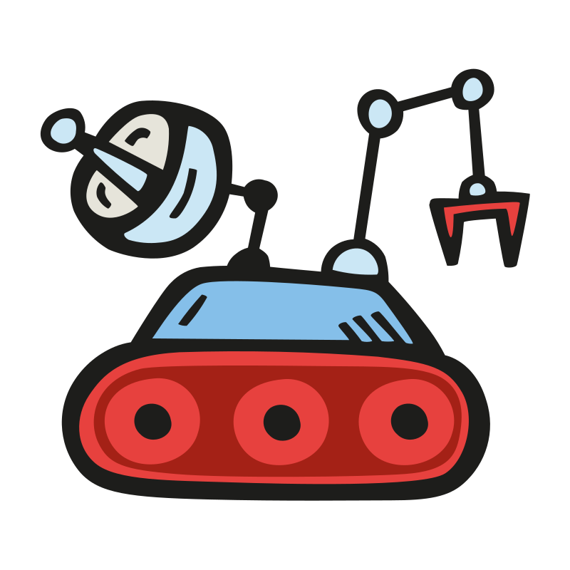

Red Rover
The Galaxy can only be saved through your questions and your team's answers!

To play Red Rover, you create a Study Buddy sheet that has questions and answers. Players are seperated into teams and a player from each team is randomly selected to compete against another to see who can answer the question first and correctly. If the first player does not answer correctly, the other player has a chance to answer. The "losing" player is then brought over to the winning player's team. The game continues until there are no more questions, in which case, the team with the most players wins OR until all the players are on one team.
Study Buddy
Study Buddy Template
This is a Study Buddy Template! Want to know more? Click here!
About
Red Rover is a game that began as an idea for a study game I thought of to help my husband study while at his academy. It then evolved into a project for my Web Development class. The main purpose of Red Rover is to help guide and motivate users to do their own study and thought development without the use of aritificial intelligence. In a time when answers are easily available, knowing how to aquire knowledge and forming the right question is just as important as having the right answer.